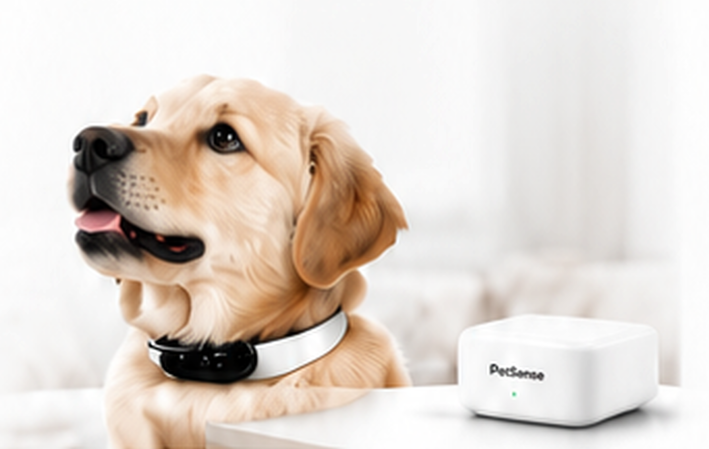
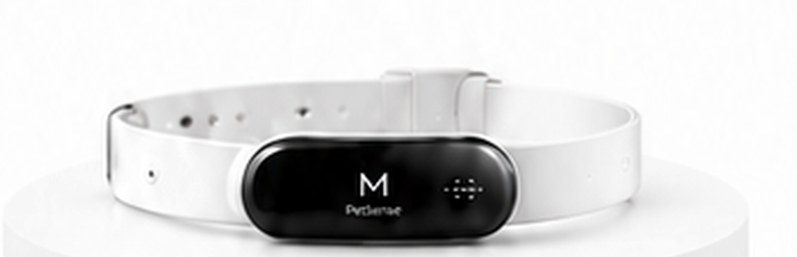
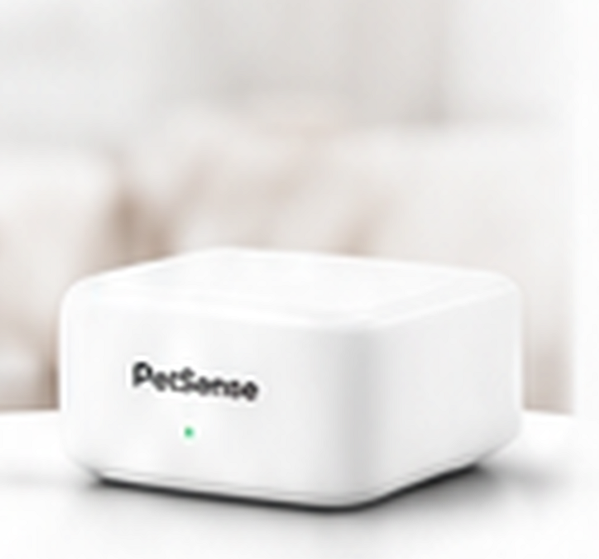

多模态感知
多传感器数据融合
AI PET HEALTH MONITOR
AI 守护，健康看得见
结合智能项圈与居家基站的双硬件 AI 监护产品，通过多模态传感器实时监测宠物健康状态，在疾病早期发出预警，让主人不在宠物身边时也能安心。

产品理念
PetSense AI 通过多模态健康监测、端云协同计算与 AI 深度分析，为宠物打造 7×24 小时的健康守护体系。
多传感器数据融合
智能分析异常与风险
更早发现问题，给主人安心生活的底气

双硬件协同设计
PetSense 采用项圈与居家基站的双硬件组合，在散养场景下实现高效协同与智能分析。
PetSense 项圈

PetSense 居家基站

核心 AI 健康监测能力
识别活动量异常
呼吸频率与节律分析
发现发热或温度过低
分析压力、焦虑等情绪
睡眠质量与作息评估
基于 GPS · 电子围栏
咳嗽频率异常融合监测
多维度专业评估
PETSENSE AI · PRODUCT SYSTEM
健康数据，一手掌握
布偶猫 · 2岁3个月
健康指数 ⓘ
优秀较昨日 ↑3Momo今天活动量比平时减少15%，建议晚上陪它玩耍10–15分钟。
Momo今天整体状态良好，但有一些轻微变化需要注意～
活动较昨日 ↓15%
85/100睡眠较昨日 ↑10%
96/100饮食正常
90/100情绪平稳
88/100Momo今天活动量有所下降，可能是因为天气炎热，建议增加互动时间，并留意排便情况是否恢复正常。
已连接
布偶猫 · 2岁3个月 · 4.2kg
端云协同架构
实时采集多模态数据
本地轻量化推理
边缘计算与环境感知
本地事件识别与汇聚
深度趋势分析
疾病风险预测
健康管理与用户交互
个性化干预建议
数据闭环持续优化
为什么选择 PetSense AI
从身体到情绪，全方位 AI 监测
智能预警，抢在疾病前
长期数据沉淀，更了解你的毛孩子
无论你在哪里，宠物都被守护
适应更多生活场景，安心佩戴
全家一起守护